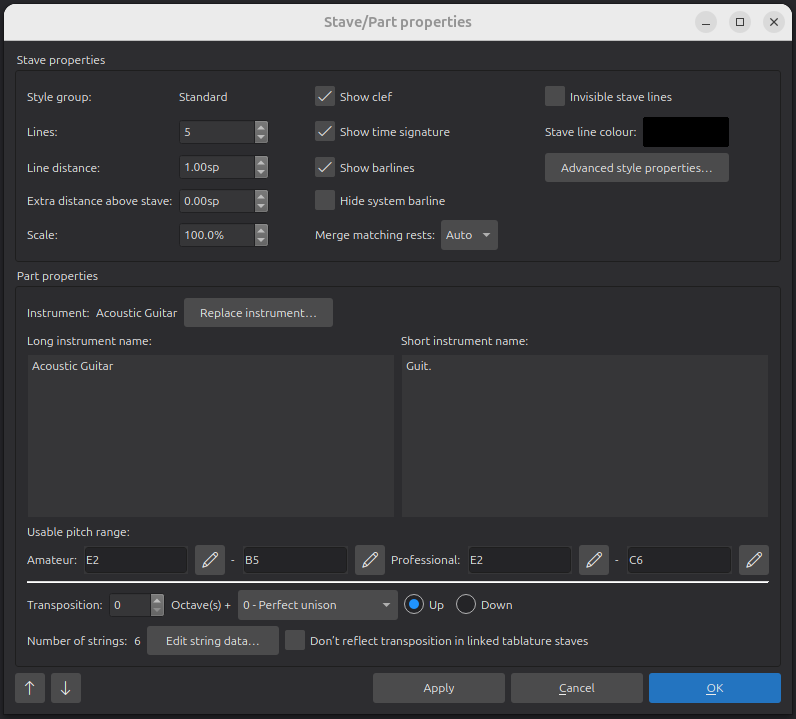
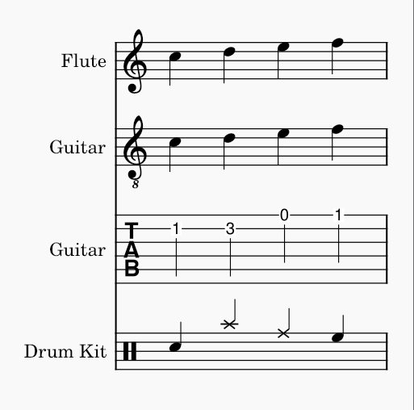
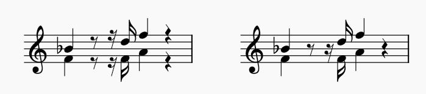
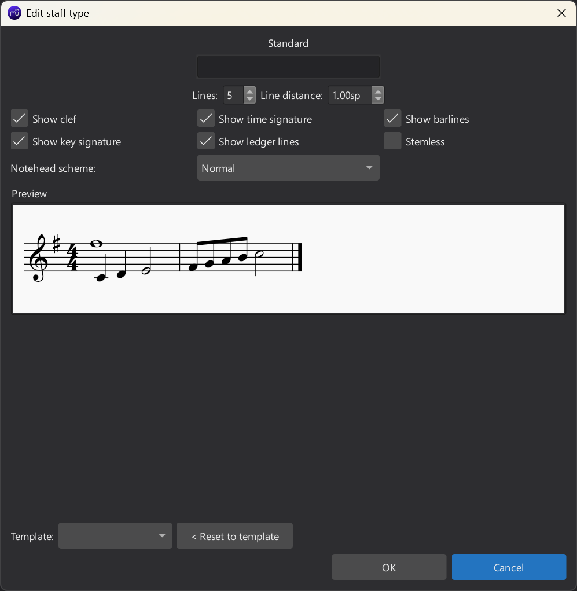
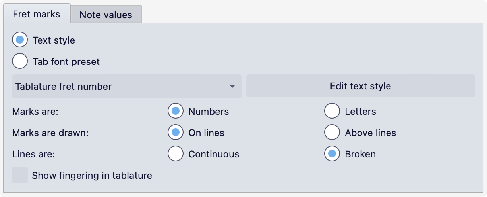

谱表/分谱属性
概述
谱表/分谱属性 对话框允许你更改谱表的显示属性以及它所属乐器的属性。
要打开该对话框：
- 右键单击谱表中的空白区域，或乐谱中的乐器标签。
- 选择 谱表/分谱属性…
窗口左下角的上/下箭头按钮可在乐谱的各条谱表之间移动。请注意，除非你先单击 应用，否则你对当前谱表所做的任何更改都会丢失。

谱表有四种不同类型，在对话框中称为 样式组：
- 标准，最常见的类型，有两种变体：
- 一种用于有音高乐器（有品、拨弦乐器除外）。
- 一种用于有品、拨弦乐器，具有设置弦数和调弦的额外选项。
- 吉他谱（TAB），也用于有品、拨弦乐器，具有相同的弦配置选项。
- 打击乐，用于无音高的打击乐器。

每种基本谱表类型的一个示例
对于每种类型，都有预定义的模板可供在 高级样式属性 对话框中选择（见下文）。
更换乐器 可以更改谱表类型，但请注意，这样做有时可能产生不理想的结果，播放也会不正确——例如，将标准类型的谱表（如长笛）更换为打击乐类型（如架子鼓）时。
谱表属性
对话框的顶部部分允许你自定义谱表的外观。这些选项对所有谱表类型通用。
请注意，所有这些设置仅适用于正在编辑的特定谱表。
第一列：
- 样式组：显示谱表类型（标准、吉他谱、打击乐）。
- 线数：谱表线的数量。大多数有音高乐器使用 5 线谱表，但打击乐谱表可能有不同的线数，而且大多数（尽管并非全部）吉他谱表的线数与乐器的弦数相同。
- 线距：线之间的距离，以间距（sp）为单位；1 为“正常”。不要更改此项来获得更大或更小的谱表；请改用 缩放。
- 谱表上方额外距离：增大或减小此谱表与其上方谱表之间的最小距离。此设置对系统最顶端的谱表没有影响。它也会影响乐谱中的所有系统。要更改单个系统上的间距，请使用 间距器。
- 缩放：谱表及其内容的大小，以自定义百分比表示。要更改乐谱中所有谱表的缩放，请使用 页面设置 > 缩放。
第二列：
- 显示谱号：谱号是否出现在谱表上。
- 显示拍号：拍号是否出现在谱表上。
- 显示小节线：小节线是否绘制在谱表上。
- 隐藏系统小节线：系统左边缘的起始小节线是否应隐藏。
- 合并相同休止符：
- 自动：遵循 格式 -> 样式 -> 休止符 中整份乐谱的设置。
- 开/关：多个声部中同时出现的休止符是否会被合并（叠放在一起绘制），无论整份乐谱的设置如何。

合并相同休止符 关（左）和开（右）
第三列：
- 不可见谱表线：使谱表线不可见。
- 谱表线颜色：更改谱表线的颜色。
- 高级样式属性... 按钮会打开一个单独的对话框，下文将介绍。
高级样式属性

此对话框中的一些设置对所有谱表类型通用。前两行中的设置只是主 谱表/分谱属性 对话框中设置的重复项（线数、线距、显示谱号、显示拍号、显示小节线）。
窗口底部的 模板 下拉菜单可让你将预定义的模板样式应用于谱表。对于吉他谱谱表，模板包含各种谱表线数和记谱样式。对于打击乐谱表，模板包含不同谱表线数的设置。
要应用模板：
- 从模板下拉列表中进行选择。
- 按 < 重置为模板 按钮。
- 按 确定。
对于除打击乐之外的所有样式，预览 会显示反映对话框中设置的记谱渲染示例，因此你可以看到所做更改的效果。
其余设置根据当前谱表类型而有所不同。
仅标准与打击乐谱表样式
这些设置也是从主 谱表/分谱属性 对话框复制的。
- 显示调号、显示加线：控制是否绘制调号和加线。
- 无符干：绘制音符时不带符干、符尾或符杠。
仅标准谱表样式
- 符头体系：指定要使用的符头类型（例如音名、形状音符）。参见 符头体系。
仅吉他谱谱表样式
- 上下颠倒：取消勾选时（默认），顶部谱表线对应最高弦，底部线对应最低弦。勾选后则相反（例如用于意大利式鲁特琴吉他谱）。
其余设置分为两个独立的选项卡。
品位标记

要为品位标记选择字体，有两个选项：
- 文本样式：使用一种文本样式。它提供一个下拉菜单，你可以从中选择要使用的文本样式（默认是 吉他谱品位数字）。编辑文本样式 按钮会带你到 文本样式 中该样式的页面，你可以像配置其他任何样式一样配置它。
- 吉他谱字体预设：使用八种内置字体之一，这些字体支持各种不同风格（现代和历史风格）所需的所有符号。它提供三个子选项：
- 字体：要使用哪种内置字体。
- 大小：品位标记的字体大小。内置字体通常在 9–10pt 的大小时看起来不错。
- 垂直偏移：对符号应用垂直偏移。正值使它们向下移动，负值使它们向上移动。通常没有必要更改此设置，但在遇到符号对齐方式不常规的字体时可能会很有用。
其余选项用于配置记谱样式：
- 标记为：数字（1、2、3...）或 字母（a、b、c...）。使用字母时，会跳过 'j'。
- 标记绘制在：线上（即在线条上垂直居中）或 线上方。
- 线为：连续（线条会直接穿过品位标记）或 间断（线条在穿过品位标记时会被遮住）。
- 在吉他谱中显示指法：设置从 吉他 面板添加的指法是否应绘制出来。
时值

这些设置配置节奏在吉他谱谱表上的表示方式。
显示为 设置实际上是最重要的，因为它决定了其他哪些选项相关或启用。共有三个选项：
- 无：不表示节奏；此选项卡中的所有其他选项都会被禁用和/或忽略。
- 音符符号：节奏将用谱表上方形状类似音符的符号来表示。
- 符干与符杠：节奏将使用符干、符尾和符杠来记谱，就像在标准谱表上一样。
如果选择 音符符号，则以下设置适用：
- 字体：用于绘制音符时值符号的字体。目前提供五种字体，以五种不同风格（现代、意大利吉他谱、法国吉他谱、法国巴洛克（无符头）、法国巴洛克）支持所有必要符号。
- 大小：音符时值符号的字体大小。内置字体通常在 15pt 的大小时看起来不错。
- 垂直偏移：对符号应用垂直偏移。正值使它们向下移动，负值使它们向上移动。
- 重复：默认情况下，音符时值符号仅在时值变化时才显示。此设置指定何时应重复它们：
- 从不：符号从不重复。
- 新系统时：始终在新系统开头绘制时值符号。
- 新小节时：始终在新小节开头绘制时值符号。
- 始终：为每个音符绘制一个时值符号。
- 显示休止符：是否也为休止符绘制音符时值符号。如果显示，它们绘制的位置比音符的稍低。
如果选择 符干与符杠，则以下设置适用：
- 符干样式：符干和符杠可以绘制在 谱表旁（始终在谱表外侧，上方或下方），也可以 穿过谱表（穿过谱表绘制以到达品位标记，就像普通谱表上的符干到达符头一样）。
- 符干位置：符干和符杠绘制在谱表的 上方 还是 下方；仅当 符干样式 设置为 谱表旁 时可用（如果选择 穿过谱表，符干和符杠始终绘制在品位标记下方）。
- 二分音符：二分音符如何表示。在普通谱表上，这通过更改符头来实现，而在吉他谱中这不是一个选项。选项有：
- 无：不绘制符干。
- 短符干：绘制一个缩短的符干（仅当 符干样式 设置为 谱表旁 时可用）。
- 斜线符干：绘制一个带有双震音斜线的符干。
分谱属性
对话框的这一部分更恰当的称呼应该是 乐器属性。当前的措辞是早期应用版本遗留的。
乐器 标识分配给该谱表的乐器。要更改乐器，请单击 更换乐器 按钮，并在出现的 选择乐器 对话框中选择一件乐器。这会为该谱表更换乐器，包括更改播放、谱表名称、移调等。如果谱表上已有 谱表类型更改 项目，这些现在可能会导致不可预测的结果。
本节中所有其他设置的默认值均取自 MuseScore Studio 的乐器定义。
长乐器名称 和 短乐器名称 是可显示在乐谱中谱表左侧的标签。要配置在何处显示哪个名称，请转到 格式 -> 样式 -> 乐谱 -> 乐器名称。
可用音高范围 定义乐器的可用范围。默认情况下，MuseScore 会高亮显示超出这些范围的音符。（高亮显示只影响屏幕上的显示，不影响打印或导出。）要禁用或重新启用此功能：
- 从菜单栏选择 编辑 -> 偏好设置（Mac：MuseScore -> 偏好设置）。
- 选择 音符输入。
- 切换 将超出可用音高范围的音符着色。
定义了两个范围：
- 业余：一个更有限的范围，可假定对非专业演奏者切实可行。超出此范围的音符被着色为橄榄绿/深黄色。
- 专业：专业演奏者可达到的乐器完整范围。超出此范围的音符被着色为红色。
这些范围限制中有许多是主观的、可以商榷的。如果你希望在乐谱中调整它们，请单击每个音名旁的铅笔图标。
移调 指定乐器的移调，即在乐谱不以实际音高显示时，音高的记谱方式与实际发声方式之间的差异。它由以下各项组合指定：
- 八度：八度的数量。
- 一个介于 0 到 12 个半音之间的 音程，从下拉菜单中选择。
- 上/下：移调的方向。
对于简单八度移调以外的移调（即从下拉菜单中选择 纯一度 以外的音程），会显示一个额外的下拉菜单 移调调号优先使用升号还是降号，它指定在存在两个等音等价调号时使用哪个调号，例如 B 大调和降 C 大调：
- 无：尽可能匹配未移调调号的变音记号类型。
- 降号：存在降号版本时使用降号版本的调号。
- 升号：存在升号版本时使用升号版本。
- 自动：使用变音记号较少的版本；如果没有差异，则匹配未移调调号的变音记号。
有品、拨弦乐器的附加设置
还有最后一行，仅对有品、拨弦乐器显示（在标准和吉他谱谱表样式上）：
- 弦数 显示乐器的弦数。
- 编辑弦数据…：此按钮打开一个对话框，你可以在其中更改弦数及其调弦。详见 更改调弦。
- 不要在链接的吉他谱谱表中反映移调：如果关闭，任何链接到此谱表的吉他谱谱表都不会反映主谱表的移调。